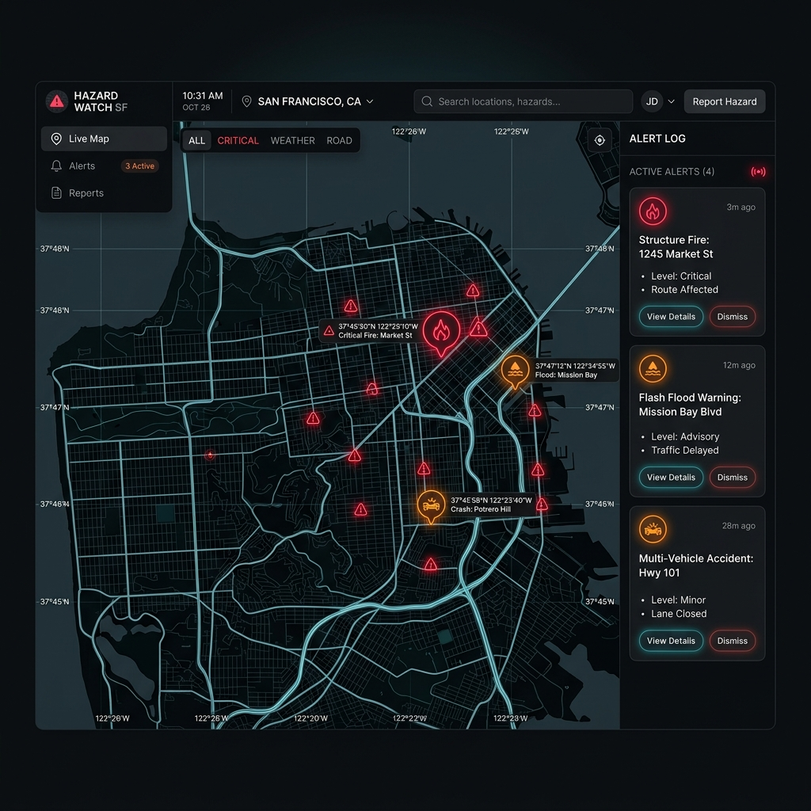

Vigilant — AI Civic Intelligence
An AI-powered hyperlocal hazard reporting map dashboard automatically classifying community reports.
The Challenge
Municipal reporting portals often rely on manual sorting of uploaded hazards (debris, potholes, fallen trees), creating dispatch delays. Furthermore, users often submit duplicate hazard photos of the same incident, cluttering public maps and admin boards.
System Architecture
We developed a map dashboard linking image analysis pipelines with geospatial databases.

User-uploaded photos are routed to Gemini multimodal endpoints, which return hazard type predictions and severity estimates. The database runs coordinate queries checking for existing alerts within a 20-meter radius, filtering out redundant submissions before plotting markers.
Measurable Impact
Vigilant automatically matches and categorizes community submissions with high precision, removing the need for manual categorization on 90% of reports.
Challenges & Key Learnings
Duplicate grouping: Resolving multiple reports of a single pothole. Designed a geospatial filter query that clusters pins based on latitudinal boundaries and matches Gemini-extracted image tags to prevent map visual clutter.